| Reportages spéciaux |
| 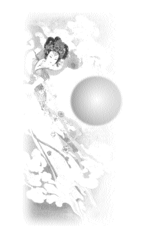 | Le festival de la mi-automne est l'un des trois plus grands festivals célébrés par les orientaux à travers le monde. Pour cette fête, Maître a spécialement donné pour instruction à tous les centres du monde entier de préparer des gâteaux, des bonbons, des jouets et des affaires de base en cadeaux pour les enfants des initiés et des invités qui viennent dans les centres. En supplément, un peu d'argent de poche (50 francs) devait être donnée aux enfants des familles les moins favorisées. Grâce à l'amour que nous avons tous partagé pendant cette fête, une atmosphère chaleureuse et joyeuse s'est sûrement illuminée à travers le monde entier. |
Chère Maître vénérée, je suis Anatoli, un de Vos nouveaux disciples. Je suis très content d'avoir reçu Votre bénédiction qui aide non seulement la culture de mon âme, mais aussi à satisfaire bien des besoins matériels de ma famille !
Ma fille et moi avons reçu beaucoup de cadeaux au festival de la mi-automne, et nous nous sommes sentis vraiment bénis. Maître, nous Vous sommes extrêmement reconnaissants. Je Vous envoie sincèrement mes meilleurs vœux, et espère que Vous visiterez la Russie dans un proche avenir.
| 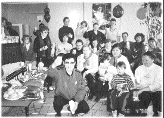 | Les initiés à Moscou en Russie portent un toast à Maître pour le festival de la Lune |
| 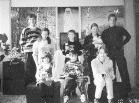 | Les petits enfants de Dieu devant le poster de Maître |
La célébration du festival de la mi-automne a été une heureuse surprise pour tous les initiés, petits et grands, du Centre de Montréal! En emballant les bonbons et friandises dans des sachets individuels, et en préparant les décorations, nous nous sommes sentis aussi joyeux que de petits enfants à l'idée des visages réjouis des petits et grands en voyant cette surprise inattendue, le lendemain à la méditation de groupe.
Le dimanche matin, les rires avaient déjà commencé à apporter une ambiance de fête au Centre de Montréal quand nous avons regardé la cassette vidéo sur la célébration du festival de la Lune à Hsihu. La fête a commencé après la fin de la méditation de groupe. Les enfants, en plus grand nombre, étaient les invités d'honneur. Impatients, ils couraient dans tous les sens en attendant leur tour pour recevoir les enveloppes rouges (contenant l'argent de bonne fortune), des jouets, des gâteaux et des bonbons de Maître. Chacun leur tour, ils ont choisi les jouets qu'ils voulaient, repartant les bras remplis de cadeaux affectueux. Ils les ont ouverts et les ont montrés immédiatement à papa, maman et à leurs nouveaux amis. Même ceux qui n'ont pu venir ce jour-là, ont eu également leur surprise. Leurs parents sont venus recevoir les cadeaux de Maître sous un tonnerre d'applaudissements.
| 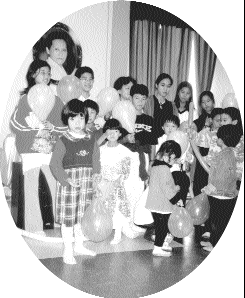 | Maître a de délicieuses surprises pour Ses petits et grands enfants |
Après la méditation de groupe hebdomadaire, les pratiquants ont travaillé durement pour préparer la fête du festival de la mi-automne. Pendant que des pratiquants faisaient les cadeaux, certains accueillaient les invités, et d'autres préparaient à manger et à boire. La fête du festival de la mi-automne allait commencer ! Les familles des initiés et les enfants sont arrivés l'air heureux. Jamais auparavant le Centre n'avait connu une telle foule d'enfants. Tout le monde a eu un cadeau. Pendant le repas, les pratiquants ont pris plaisir à parler et à rire entre eux et ont ouvert les cadeaux pour s'amuser avec leurs amis. Ils ont tous passé un très bon moment.
Les initiés du Centre d'Hawaii ont terminé les préparatifs de la fête du festival de la mi-automne en très peu de temps. Ils sont venus ensuite avec leur famille pour profiter de l'amour, des rires et de l'amitié. Les enfants étaient ravis d'avoir leurs friandises préférées, leurs petits cadeaux et leurs jouets qui avaient été préparés spécialement pour eux. Tout le monde s'est régalé d'un délicieux repas végétarien, de nombreux beaux fruits frais et de gâteaux lunaires qui augmentaient l'humeur de fête. Par la compassion, l'amour et l'attention de Maître, tous les enfants, jeunes et moins jeunes, ont profité de l'amitié et de l'amour de chacun.
| 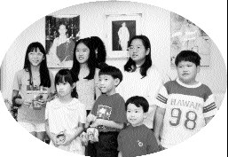 | A Hawaii, tous les initiés étaient prêts pour fêter le festival de la Lune pour les enfants |
Merci Maître pour la nourriture bénie et les jouets que Vous avez envoyés. Les sœurs, les frères et les enfants du centre du Minnesota ont tous passé un très bon moment. Nous Vous remercions aussi pour Votre attention et Votre amour. Nous Vous faisons parvenir une photo de tous Vos enfants aux visages réjouis du Minnesota avec toute notre affection.
| 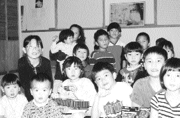 | Dans l'état du Minnesota, de sourires éclatants illuminent le visage des enfants |
Grâce au merveilleux pouvoir de bénédiction de Maître, le festival de la Lune de cette année au Centre d'Austin a été un grand succès. Après avoir apprécié la pure et délicieuse cuisine végétarienne et la musique, tous les enfants et adultes du centre ont reçu des lampions de formes variées et des paquets de bonbons. Ils ont fait la queue pour allumer leur lampion. Le visage des enfants s'est éclairé de joie tandis qu'ils marchaient tout autour du Centre avec leurs lampions parlant sans cesse entre eux.
| 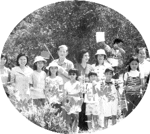 | A Austin au Texas, les adultes se sont joints aux enfants pour porter leur lampion lumineux tout autour du centre |
Autour du thème "célébrations pour enfants", une fête a été organisée tant pour les enfants à moitié initiés que les non-initiés afin de marquer l'occasion du festival de la mi-automne. Pendant les réjouissances, chaque enfant a allumé un lampion traditionnel en hommage aux festivités de la mi-automne. Les enfants ont joué ensemble et ont participé aux célébrations avec beaucoup de bonheur sous la bénédiction de notre Maître. La seule chose plus belle que la lumière des lampions était la douce lumière spirituelle qui émanait de chaque petit et beau visage.
| 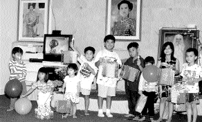 | Les lanternes à la main, les enfants de Dallas ont fêté le festival |
Pour ceux d'entre nous qui vivons dans l'hémisphère occidental, célébrer le festival de la Lune était quelque chose de nouveau et de très intéressant. Nous étions très heureux d'avoir l'occasion de nous réunir et de partager les bénédictions et la bonne chance accordée par Maître. Tout le monde a reçu une enveloppe rouge (contenant l'argent de bonne fortune) selon la coutume orientale. Nous avons aussi, partagé un gâteau spécial de la lune préparé par des initiés chinois et avons regardé la lune briller au-dessus de nous.Saisissant cette occasion, des initiés ont coupé un ruban rouge pour inaugurer le nouveau centre du Costa Rica. En entendant la musique de Maître, nous nous sentions tous contents, emplis d'amour, en paix et unis à cette réunion de famille spirituelle.
La gaieté abondait chez les enfants. Ils ont reçu des ballons, des jouets, des bonbons et des gâteaux et ont été ceux qui ont le plus apprécié cette occasion spéciale. Pour les enfants de familles pauvres et des orphelinats, les initiés ont apporté des jouets, des enveloppes avec de l'argent et des paquets de nourriture.
| 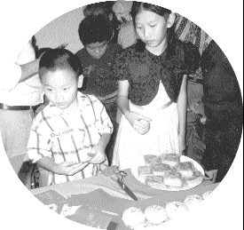 | Avec les lampions, les gâteaux de lune et les enveloppes rouges d'argent de bonne chance, les pratiquants du Costa Rica et leurs enfants ont apprécié le festival oriental romantique |
Dans les nouvelles Galles du Sud d'Australie, le festival de la mi-automne tombait, cette année, le même jour que la Fête du travail, jour férié en Australie. Les initiés ont organisé un camping de trois jours au Parc de Bents Bassin, où des pratiquants d'autres états les ont rejoints. Des séances régulières de méditation ont eu lieu, mais la plupart du temps, chacun était libre de profiter de toutes sortes d'activités comme le barbecue, chanter, et nager dans la rivière. Chaque enfant à reçu un paquet de bonbons, de biscuits et un lampion. Tous les participants ont chanté gaiement et agréablement autour du feu de camp.
| 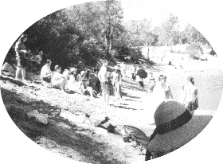 | A Sydney en Australie, les initiés ont regardé la lune pendant leur camping |
Merci beaucoup de nous avoir donné un présent merveilleux, à savoir notre récente célébration du festival de la lune. Tout le monde était content, surtout les enfants. Ils étaient très contents de recevoir des lampions, des livres et des fournitures spécialement préparés pour eux. Quand nous avons mangé les beaux et nourrissants gâteaux lunaires, nous n'avons pas pu nous retenir de penser à Vous et de regretter que Vous ne soyez pas là, même si nous savions que Vous étiez avec nous spirituellement à ce moment-là.
Le Centre d'Auckland a reçu la directive pleine d'amour de Maître, le soir juste avant le festival de la mi-automne. Les initiés sont immédiatement allés acheter des cadeaux et un bon nombre d'entre eux ont passé la nuit à préparer des gâteaux lunaires et de somptueuses collations pour l'événement qui devait se tenir le jour suivant. Leurs efforts avaient pour but de permettre aux enfants de la famille Guan Yin de savourer l'amour de leur Mère indulgente.
La célébration coïncidait avec la retraite d'un jour du Centre d'Auckland. Après la méditation, beaucoup de pratiquants d'autres endroits sont venus en cette occasion se joindre à nous. Le Centre était rempli de joie, les enfants sont arrivés les uns après les autres pour recevoir leurs cadeaux, et la joie se lisait sur leur visage. Ce qui nous a fait particulièrement sentir l'amour immaculé de Maître a été l'argent de poche qu'Elle avait prévu pour les enfants des familles les moins favorisées.Comme des fleurs qui s'épanouissent, chaque enfant riait de tout coeur, pendant que les frères et sœurs nouvellement initiés ont saisi cette précieuse chance d'échanger des points de vue et des idées.
La première fête spéciale organisée pour les plus jeunes par le Centre de Séoul pour célébrer la Fête lunaire a attiré beaucoup d'enfants d'initiés et de non initiés au S.M. Vegetarian Buffet Restaurant. Pendant la soirée, il y a eu de nombreux jeux amusants et les enfants ont innocemment montré leurs talents en bien des aspects. Grâce à leur innocence et leur vivacité, tous ceux qui étaient présents ont beaucoup ri. Pendant que parents et enfants prenaient plaisir à la fête, nous avons aussi remercié sincèrement Maître d'avoir arrangé un rassemblement aussi merveilleux. L'événement était vraiment un "moment de paradis" avec les petits anges.
| 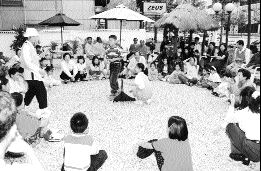 | Séoul - L'énergie, l'innocence et la pureté des petits enfants de Séoul en Corée ont permis aux parents de passer un moment paradisiaque et joyeux |
Nous devions faire notre visite régulière à un orphelinat dans les environs de Pusan, le jour après avoir reçu les instructions par fax de Maître. Dans notre conversation avec le directeur de l'orphelinat, nous avons appris qu'aucune activité avait été prévue pour les enfants le jour de la Fête de la Lune. Par conséquent, nous les avons invités à se joindre à notre célébration. Le directeur a gaiement répondu : " Les enfants sont très curieux concernant votre Centre et impatients d'y aller avec moi quand je vais à la méditation de groupe. Leur désir est sur le point de se réaliser et j'en suis très heureux pour eux. "Quand ces jeunes invités sont arrivés au Centre le jour de la célébration, ils ont d'abord regardé sur vidéo, un spectacle lors d'une retraite avant de profiter d'un fantastique dîner avec les pratiquants. Puis les pratiquants ont fait un spectacle pour amuser tout le monde. Les enfants et les invités ont reçu des cadeaux et certains des enfants se sont inclinés devant la photo de Maître en signe de reconnaissance. En rentrant à l'orphelinat, une fille de douze ans a dit : " Je vais être végétarienne à partir de maintenant. " Les pratiquants et leurs familles sont restés au Centre, buvant du thé et profitant de la merveilleuse nuit au clair de lune arrangée par Maître.
| 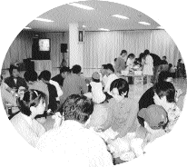 | 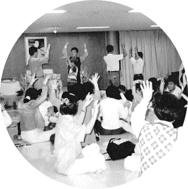 |
Les initiés de Pusan ont célébré le festival de la Lune avec un orphelinat | |
Nous avons célébré la Fête de la mi-automne chez un initié habitant dans un très bel endroit. Ce jour-là, les initiés qui avaient du temps sont venus de bonne heure pour préparer un barbecue et des plats végétariens. Des frères et sœurs avec leurs enfants sont arrivés plus tardivement. Chaque enfant a reçu un cadeau spécial chargé de l'amour de Maître. Nous nous sommes assis autour d'un feu de camp, partageant la nourriture et avons allumé des pétards, ce qui nous a transporté de joie. Nous avons passé un moment merveilleux en chantant des chansons avec nos enfants. Tard dans la nuit, nous nous sommes dit au revoir sous la lumière dorée de la pleine lune et puis nous sommes rentrés chez nous transportant avec nous l'amour de Maître.
| 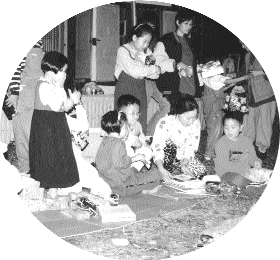 | La nuit du beau festival de la Lune à Taejon en Corée était comblée de rires, de chansons et de feux d'artifice |
Le merveilleux Maître verse continuellement Son amour sur nous. Après avoir reçu Ses instructions, Son amour maternel, nous avons joyeusement préparé des friandises, des confitures, des biscuits, des fruits, des gâteaux lunaires, et des jouets pour les enfants qui allaient venir à la Fête de la mi-automne. Beaucoup de nouveaux initiés ont pris part à l'emballage des cadeaux. Nous avons dîné à la Maison végétarienne de Maître Suprême Ching Hai. Beaucoup d'enfants sont arrivés, très heureux et fous de joie de recevoir d'adorables jouets et argent de poche de Maître. Ils étaient remplis de reconnaissance envers l'amour et l'attention de Maître.
Quand quelques initiés et invités ont su que l'événement était arrangé spécialement par Maître, tous étaient très touchés et ont dit : " Maître aime vraiment les amis initiés. "
Non seulement, les enfants des initiés étaient invités à célébrer la Fête de la mi-automne, mais également des enfants d'orphelinats et de familles défavorisées. Les enfants étaient très contents à l'idée de recevoir les jouets et les cadeaux qui étaient sur l'estrade. Ils étaient très heureux et ont passé un bon moment ensemble à regarder l'un des programmes vidéos de Maître. Nous étions tous heureux.
Quand la fête s'est terminée, quelques-uns ont trouvé que c'était trop tôt et ont dit qu'ils aimeraient participer aux prochaines activités. Merci, Maître, pour nous avoir donné une Fête de la mi-automne inoubliable et une occasion d'apprendre à donner et de partager l'amour de Dieu avec les autres.
| 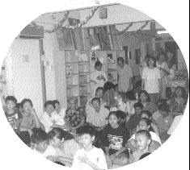 | 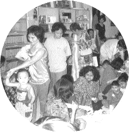 |
Les amis pratiquants de Malaisie ont invité les enfants d'un orphelinat et de familles démunies à se joindre à eux pour la fête de la mi-automne | |
Le Centre de Singapour a célébré cette année la Fête de la mi-automne sous la forme d'une journée familiale. Deux bungalows prés de la mer ont été décorés de beaux ballons et lampions donnant une ambiance fête. Sachant que Maître avait donné l'instruction de préparer pour les enfants, des cadeaux et de l'argent de poche, ils en étaient tous excités. Les pratiquants et leurs familles sont arrivés tard dans l'après-midi. Des montagnes appétissantes de spécialités végétariennes et de gâteaux lunaires les attendaient. Tout le monde s'est régalé. Au coucher du soleil, la vraie fête a commencé.
Les adultes et enfants se sont rassemblés devant les bungalows pour jouer à des jeux. Comme des casse-tête chinois et anglais, les chaises musicales et quelques jeux permettant aux parents de jouer avec leurs enfants. Après, nous avons commencé à distribuer les présents à chaque enfant. Dans les paquets cadeaux, il y avait des jouets, du petit matériel d'écriture, des friandises et un lampion. Tous les enfants étaient très heureux de recevoir les cadeaux. Avec des lampions dans leur main, ils ont marché autour du grand champ, pendant que certains jouaient avec des cierges magiques et faisaient la course avec leurs amis.
La soirée s'est terminée sur une note joyeuse ; par une distribution de ballons à chaque enfant. Nous sommes ensuite, tous rentrés chez nous très heureux.
| 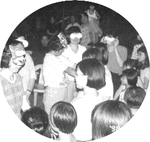 | Lors de la fête de la mi-automne, les enfants ont joué avec leurs parents |
Avec leurs enfants, les amis pratiquants de Hong Kong ont joyeusement décoré le Centre Tian Shan de beaux ballons et de guirlandes pour célébrer la Fête de la mi-automne. Une atmosphère pure et charmante a envahie le Centre. Les familles des pratiquants ont été aussi invités à partager l'amour de Maître. Quand les jeunes initiés et les invités ont reçu les cadeaux de Maître, ils les ont serrés fort et ne voulant pas s'en séparer. L'un d'eux a joyeusement annoncé : " Finalement, j'ai un nouveau plumier. " Maître sait sûrement ce qu'il y a dans l'esprit des enfants, c'était vraiment le jour le plus heureux de l'année pour les enfants.
| 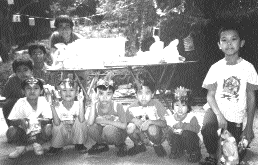 |
Le Centre de Macau a célébré la Fête de la mi-automne le dimanche soir. Il pleuvait, mais une atmosphère sereine et merveilleuse, a été appréciée par tout le monde, ainsi qu'une délicieuse cuisine de fête. En regardant les conférences vidéos de Maître, les enfants étaient particulièrement excités. Ils ont précautionneusement ouvert leurs cadeaux spéciaux bénis par l'amour de Maître. Autant les adultes que les enfants ont passé une soirée de paix et de bonheur.
| 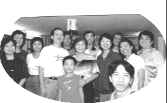 | Des amis pratiquants de Macau et leurs enfants à la célébration du Festival de la Mi-Automne. |
Beaucoup d'enfants étaient très excités quand on a annoncé à la méditation de groupe que des cadeaux de Maître leur seraient donnés dimanche à Hsihu. Très tôt, ce dimanche-là, les enfants ont impatiemment pressé leurs parents de les emmener à Hsihu. Ils étaient aussi imprégnés du tendre amour de Maître. Les parents avec des nouveaux-nés étaient particulièrement heureux de recevoir un cadeau symbolique et de bon augure pour leur bébé né dans l'année du tigre.
Normalement, beaucoup d'initiés ne peuvent pas participer les dimanches à la grande méditation de groupe, parce qu'ils doivent s'occuper de leur enfants. Pour tous, ce dimanche était exceptionnel, et en cette occasion, les disciples ont amené leurs enfants "à la maison". Près de deux mille enfants se sont réunis au centre de Hsihu. Le Centre résonnait de rires innocents. C'était bruyant mais réjouissant ! Certains enfants se sont spécialement habillés dans des costumes chinois traditionnels. Le Centre était décoré de ballons de toutes les couleurs. Il y avait sous un arbre une statue du légendaire lapin de jade (qu'on croit être dans la lune) qui est immédiatement devenu l'attraction principale de tous les enfants qui se sont amusés autour.
Après le repas, les familles n'ont pas perdu de temps à faire la queue pour recevoir leur cadeau. Chacun a reçu un paquet de bonbons et de gâteaux délicieux, aussi bien que des jouets, du matériel d'écriture et des livres adaptés à leur âge. Les enfants de familles défavorisées ont reçu de l'argent de poche de Maître. Cela fait très longtemps que les enfants de Formose n'ont pas vu Maître. Aussi, ils adorent particulièrement les cadeaux qu'ils reçoivent d'Elle. Leurs visages innocents pouvaient à peine contenir leur joie et leur reconnaissance.
| 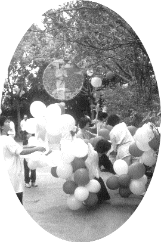 | 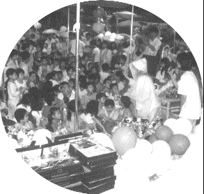 |
| |
Une montagne de bonbons, de gâteaux et de cadeaux mais pas aussi grande que l'amour de Maître pour les enfants. | |